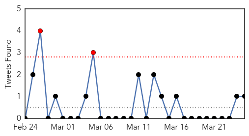
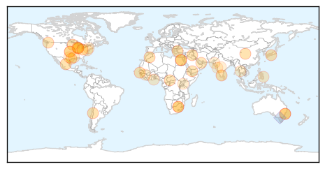
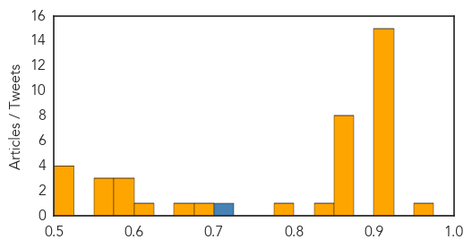
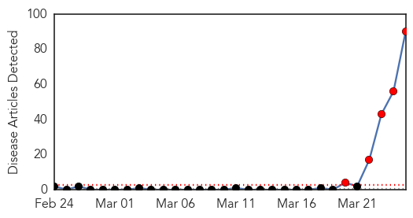
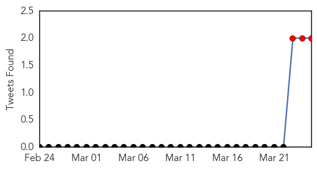
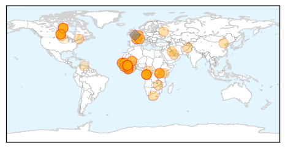
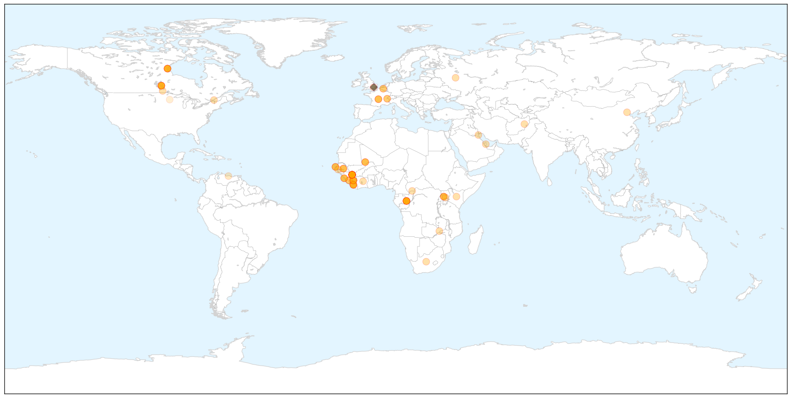
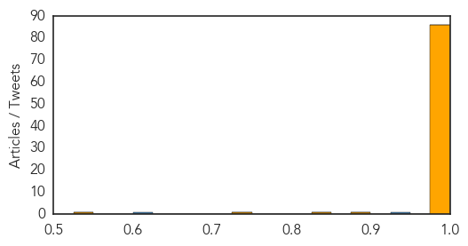

Unknown
30-Day Web Trend
0 alerts, 0 warnings

30-Day Twitter Trend
2 alerts, 0 warnings

Article Locations

Article Confidences
Top Articles:
- 0.974
- Rise in level of awareness of TB
- 0.921
- Reaching the 3 million — a TB test, treatment and cure for all
- 0.917
- Chicago Tribune
- 0.917
- Chicago Tribune
- 0.917
- Chicago Tribune
- 0.917
- Chicago Tribune
- 0.917
- Chicago Tribune
- 0.917
- Chicago Tribune
- 0.917
- Chicago Tribune
- 0.917
- Chicago Tribune
- 0.917
- Chicago Tribune
- 0.917
- Chicago Tribune
- 0.915
- Deadly virus spurs call for horse quarantine
- 0.914
- "A community outbreak of meningococcal serogroup B disease in western S" by Andrew Jardine, George Truman et al.
- 0.910
- The world windows to Thailand
- 0.903
- Optimism on second pig virus
- 0.866
- More victims found in Washington state landslide, official says
- 0.866
- AU troops label militia in C.African Republic "terrorists"
- 0.866
- Gunmen kidnap two Westerners working for UN in Yemen-police source
- 0.866
- Johannesburg exchange probes disclosure of Pinnacle director arrest
- 0.866
- bribe charges a "misunderstanding"
- 0.866
- Protests over trials of Muslim Brotherhood members erupt in Alexandria
- 0.866
- Protests erupt over mass trials of Brotherhood members in Egypt
- 0.866
- Beset by differences, Arab leaders open annual summit
- 0.835
- Million children a year develop TB
- 0.792
- UAE battles to treat malaria as study shows hundreds of imported cases
- 0.680
- To prevent brain-eating amoeba, most of state's drinking water meets new disinfectant mandate
- 0.670
- Polio outbreak in the Middle East - update
- 0.613
- 4,000 TB cases undetected in 2013
- 0.594
- Newswire & Press Release / Eye Stem Cell Treatments to Begin in Dubai - Middle East - Health/Surgery - MD Stem Cells
- 0.590
- Vaccines still key to hopes of quenching AIDS pandemic
- 0.584
- New childhood TB cases double earlier estimates
- 0.563
- Diabetes and TB: A growing threat
- 0.561
- Iganga hosts World TB Day
- 0.556
- Deadly Ebola Virus Spreading Across Guinea
- 0.524
- Students at Queens high school tested after TB scare
- 0.516
- Election call shocks Thane health staff
- 0.511
- Aid agencies seek $11.67m to help 1.3m calamity hit residents of Tharparkar
- 0.505
- NMMC worried about the rising number of TB patients
Top Tweets:
- 0.711
- RT: Truth RT: @NPSmedicinewise Remember you can't catch the flu from the flu vaccine! urbanmyth
Ebola
30-Day Web Trend
5 alerts, 0 warnings

30-Day Twitter Trend
3 alerts, 0 warnings

Article Locations

X

Article Confidences
Top Articles:
- 1.000
- Terrifying Ebola outbreak spreading fast
- 1.000
- Untitled Article
- 1.000
- W.African nations scramble to prevent spread of Ebola deaths
- 1.000
- West African nations scramble to contain Ebola threat
- 1.000
- Ebola virus suspected to have spread from Guinea to Liberia
- 1.000
- Canadian Man Does Not Have Ebola, Tests Reveal
- 1.000
- UNICEF, local authorities scramble to contain outbreak
- 1.000
- Fifty-nine now dead from Guinea Ebola outbreak
- 1.000
- African health workers battle Ebola
- 1.000
- West African nations scramble to contain Ebola threat:Tuesday 25 March 2014
- 1.000
- Canada rules out suspected case of Ebola
- 1.000
- Uganda starts Ebola surveillance after outbreak in Guinea
- 1.000
- Ebola outbreak nears end in Nigeria
- 1.000
- Facts And Figures To Quell Your Fears
- 1.000
- Ebola virus suspected to have spread from Guinea to Liberia
- 1.000
- Could This Be The Start Of A Pandemic?
- 1.000
- Ebola Outbreak in Guinea 'Spreads to Canada and Liberia' as Tourist Critical in Hospital
- 1.000
- Ebola Kills Dozens In Guinea, May Have Spread To Sierra Leone
- 1.000
- Ebola - Taming a Killer Virus
- 1.000
- Ebola outbreak in Guinea may spread to Liberia
- 1.000
- W.African health teams battle to contain Ebola
- 1.000
- West African nations scramble to prevent spread of Ebola deaths
- 1.000
- Guinea Ebola outbreak thought to have spread to Sierra Leone
- 1.000
- Ebola outbreak continues
- 1.000
- West Africa on high alert as medics battle the Ebola virus
- 1.000
- West Africa on high alert as medics battle the Ebola virus
- 1.000
- Canadian patient gets Ebola all-clear after Liberia return
- 1.000
- Canadian patient gets Ebola all-clear after Liberia return
- 1.000
- Canadian patient gets Ebola all-clear after Liberia return
- 1.000
- Canadian patient gets Ebola all-clear after Liberia return
- 1.000
- Canadian man who just returned from Liberia falls ill with symptoms resembling the deadly Ebola virus
- 1.000
- Ebola ruled out in case of hospitalized Saskatoon man
- 1.000
- Ebola ruled out in case of hospitalized Saskatoon man
- 1.000
- Man in Canadian hospital with Ebola-like symptoms
- 1.000
- Man critically ill in Saskatoon after travel to Africa
- 1.000
- African health workers battle Ebola
- 1.000
- Guinea Ebola Outbreak: Bat-Eating Banned To Curb Virus
- 1.000
- Ebola outbreak in Guinea may spread to Liberia
- 1.000
- Ebola Death Toll Up to 59 In Guinea
- 1.000
- West African nations scramble to contain Ebola threat
- 1.000
- Guinea Ebola outbreak: Bat-eating banned to curb virus
- 1.000
- W Africa scrambles to prevent Ebola spread
- 1.000
- Ebola victims quarantined in Guinea
- 1.000
- Guinea Ebola outbreak believed to be deadly Zaire strain
- 1.000
- Deadly Ebola virus puts 9 patients in isolation in West Africa
- 1.000
- Health officials deal with Ebola outbreak
- 1.000
- Ebola victims quarantined in Guinea
- 1.000
- Ebola victims quarantined in Guinea
- 1.000
- Suspected Ebola cases in Liberia, Canada
- 1.000
- Ebola: What you need to know about the deadly virus
Showing top 50 articles...
Top Tweets:
- 0.945
- http://t.co/8MQftKvpkC please correct. Canadian didn't have "Ebola-like virus" or Ebola but there is an Ebola outbreak in Guinea.
- 0.603
- BBC News - Guinea Ebola outbreak: Bat-eating banned to curb virus http://t.co/K01QlF3SbT